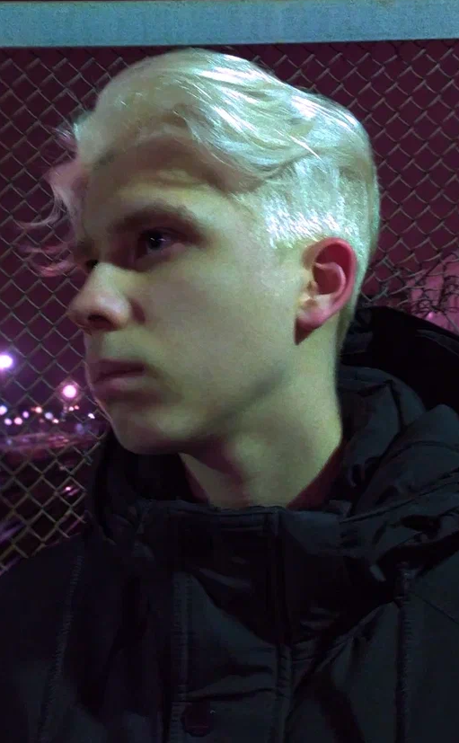

<link rel="stylesheet" href="style.css">
<link rel="preconnect" href="https://fonts.googleapis.com">
<link rel="preconnect" href="https://fonts.gstatic.com" crossorigin>
<link href="https://fonts.googleapis.com/css2?family=Kanit:wght@600&display=swap" rel="stylesheet">

<section class="main_navbar_menu">
    <div class="navbar-menu">
        <ul id="navbar">
            <li><a href="index.html">Home</a></li>
            <li><a href="about.html">About</a></li>
            <li><a href="skills.html">Skills</a></li>
            <li><a href="portfolio.html">Portfolio</a></li>
            <li><a href="contacts.html">Contacts</a></li>
        </ul>
        <hr />
    </div>
</section>
<section class="about__section">
    <div class="about-main-block">
        <h1>My name is Artem aka. Macleod</h1>
        <p>
            I am 21 years old. <br />
            I am a 3rd year student at MSTU Stankin.<br />
            This layout was made by me for the second part of the first laboratory work.<br />
            There is nothing very useful on it, but there are cats here.<br />
            Born and raised in the Saratov region, the city of Balakovo.<br />
            I hope this text is enough to make the page look like "About me".<br />
        </p>
        
    </div>
</section>